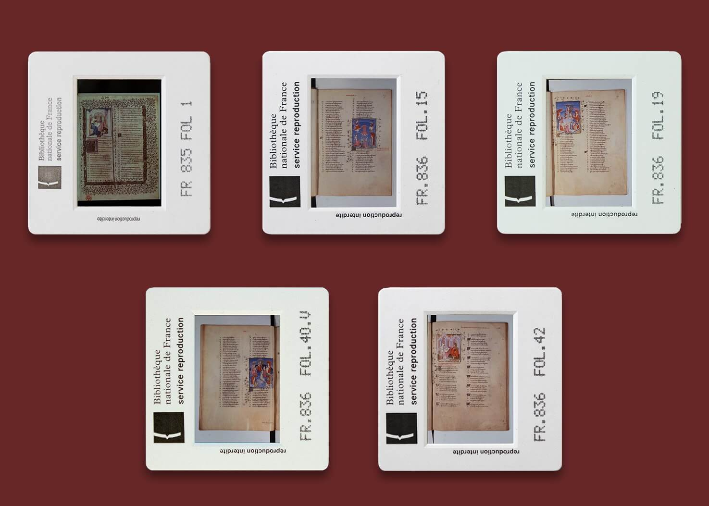
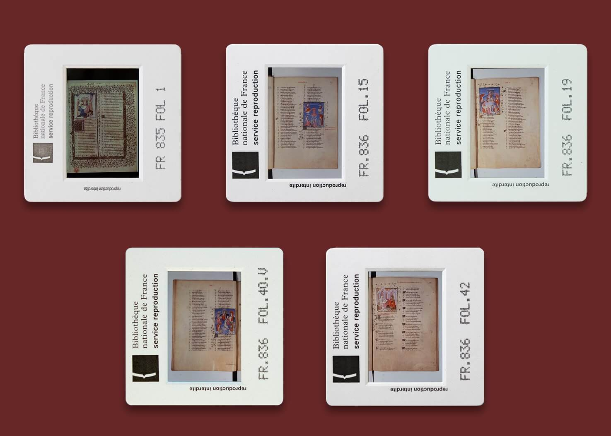

During summer 2020 I worked as a Frontend Developer and Content Manager at a University of Waterloo research project, MARGOT. MARGOT intended to digitize and make accessible historic texts from the French Middle Ages and Early Modern period.
I noticed that there was no representation of the data collection process on the website. The website only displayed some images from the original manuscripts, and most of its content was plain text which did not have a strong impact. I proposed a project to document the original film negatives and slides in order to showcase some of the physical formats of the texts.
This project resulted in an image gallery of analog materials such as slides, microfilms, and disks that were commonly used to reproduce medieval manuscripts prior to the digital revolution - all of which serve to remind us how far we have come in image reproduction.
 
